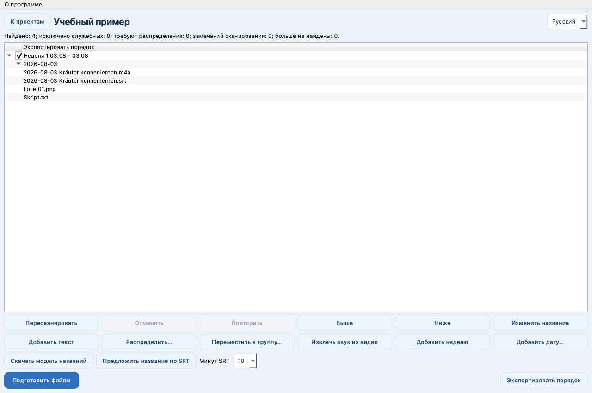

macOS 13+ · Apple Silicon
Study Archive Prep
Ordnet Lernmaterial nach Datum, extrahiert Audio und bereitet die Reihenfolge für Telegram Media Sender vor.
Nur Quellcode · 0.1.0Vor dem StartFrühe Entwicklung: nur Quellcode, kein fertiges Installationspaket. Python 3.12; lokales Modell und Engine für Titelvorschläge separat einrichten.
Kein fertiges Installationspaket. Die Anleitung beschreibt die Einrichtung aus dem Quellcode.


So funktioniert es
- Quellcode einrichten
- Material vorbereiten
- Archiv ordnen
Erste Schritte
Die Anleitung zum Start aus dem Quellcode lesen. Die App sendet selbst keine Materialien an Telegram.